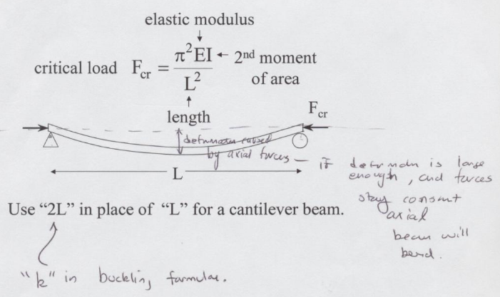

13. FER - Mechanics of Materials#
Note
Usually an actual subject expert would give the review but no-one could be forced at the time of this writing. So this is a YOYO topic.
Readings#
Videos#
Outline#
Axial Stress and Strain#
Axial stress is the ratio of the applied (axial) force to member cross-sectional area.
\(\sigma=\frac{F}{A_0}\)
Strain is the associated change in member length and radius
\(\epsilon = \frac{\Delta L}{L_0}\) \(\epsilon_r = \frac{\Delta R}{R_0}\)
The material properties are related to the forces and deformation via the elastic modulus
\(E = \frac{\sigma}{\epsilon}\) The vaues are tabulated for different common materials.
Poisson’s ratio is the ratio of radial deformation to length deformation
\(\nu = -\frac{\epsilon_r}{\epsilon}\) The values are tabulated for different materials.
Note
Stress has dimensions of a pressure (sometimes called solids pressure). The strain is normalized deformation. The deformation is proportional to the solids pressure. In elastic region the elastic modulus (below) is the constant of proportionality.
Consider a linear spring, Hookes law states:
\(F=k \Delta x\)
Divide by area
\(\frac{F}{A}=\frac{k}{A} \Delta x\)
Multiply RHS by unity
\(\sigma=\frac{k}{A} \Delta x \frac{L}{L}\)
Algebra
\(\sigma=\frac{k L}{A} \frac{\Delta x}{L}\)
The first term on RHS is the modulus of elasticity, \(E\), the second term is the axial strain \(\epsilon\).
\(\sigma=E \epsilon\)
Example 1#
A 2 in. diameter aluminum rod becomes 0.007 in. longer from a 1500 lbf tensile load.
Determine:
The rod’s initial length.
The change in radius caused by the applied load.
Solution
Sketch the situation:

Write governing principles:
\(\epsilon = \frac{\Delta L}{L_0}\)
Isolate unknown:
\(L_0 = \frac{\Delta L}{\epsilon}\)
Find \(\epsilon\) from material properties lookup
\(E = 10 \times 10^{6}~psi\)
Apply definition of elastic modulus
\(\epsilon = \frac{4 F}{\pi D_0^{2}} \times \frac{1}{E}\)
Calculate
import math
# input values
elastic_modulus = 10.0e06 #psi
diameter = 2.0 #inches
axial_load = 1500 #lbf
delta_L = 0.007 #inches
# calculated values
epsilon = (4.0*axial_load)/(elastic_modulus*math.pi*diameter**2)
initial_length=delta_L/epsilon
# result
print("Strain",round(epsilon,7))
print("Initial length :",round(initial_length,3)," inches")
Strain 4.77e-05
Initial length : 146.608 inches
Governing principles
\(\Delta R=-\frac{\epsilon_r}{\epsilon} \times \epsilon \times R_0\)
The first term in the RHS is Poisson’s ratio
\(\Delta R=-\nu \times \epsilon \times R_0\)
Find \(\nu\) from material properties lookup
\(\nu = 0.33\)
Calculate
poisson_ratio = 0.33
deltaR = -poisson_ratio*epsilon*(0.5*diameter)
print("Radius change :",round(deltaR,7)," inches")
Radius change : -1.58e-05 inches
Example 2#
Determine the change in the length of the 4 mm diameter steel wire

Solution
Look-up value for elastic modulus of steel
\(E=210~GPa\)
Draw FBD to analyze forces
Moment at pivot solve for wire tension
Solve for deformation (observe radius is 2 mm)

Thermal Strain#
Materials expand/contract with \(\Delta\)Temp.
deformation is thermal strain
if free to deform, then no stress.
\(\alpha\) is the coefficient of thermal expansion.
\((T-T_0)\) is the change in temperature.
The change in length (if deformation is allowed) is
\(L\) is the length of the member at \(T_0\)
Example 1#
A steel rod (E=210 GPa, \(\alpha =11.7 \times 10^{-6}~\text{per}~C^{o}\) is constrained and heated. What is the stress induced by a 40\(C^o\) increase in temperature?
Use Virtual Work
1 Let the rod deform, then determine force required to squeeze back into \(L_0\). Divide this force by cross sectional area to obtain normal stress (\(\sigma\))

\(\Delta L = \alpha L_0 (T-T_0)\)
\(\frac{\Delta L}{L_0} = \epsilon_T = \alpha (T-T_0) \)
2 Apply axial stress equivalent to the thermal deformation
\(\epsilon_T E = \sigma = \frac{F}{A_0}\)
\(\sigma = \alpha (T-T_0) E = (11.7 \times 10^{-6}/^oC)(40^oC)(210 \times 10^9~Pa)=98.2 \times 10^3~kN/m^2=98.2~MPa\)
Shear and Bending Diagrams#
Represents beam’s internal effects in resisting bending, shear, and torsion.

Action/reaction requires \(V\) (shear), \(M\) (bending) , and \(T\) (torsion) to be equal and opposite at internal surface.
For in-plane (only, no torsion) only consider \(V\) and \(M\).
Consider the loading below, drawing shear and bending follows simple steps.

Find all external reactions. In the diagram above, there are two reactions that are non-zero and in the vertical direction. We can find magnitude from the Moment at the left support.
In the drawing if the distance from the left support to the load is \(L_1\), then the vertical reaction is \(F(\frac{L_1}{L})\). The reaction at the roller support is \(F(\frac{L-L_1}{L})\)Isolate, determine equilibrium conditions (\(V\) and \(M\))
Move section boundary to find \(V\) and \(M\) and new location.
Point loads and couples produce discontinuous changes in \(V\) and/or \(M\).
Distributed loads
\(\frac{d}{dx}(\frac{dM}{dx}) = - w(x)\)
where \(w(x)\) is the distributed load function.
Integrate to recover shear
\(\frac{dM}{dx} = V(x) = \int{-w(x)dx} = -w(x) \cdot x + C\)
Integrate again to generate bending moment diagram
\(M = \int{V(x)dx} = \frac{-w(x)x^2}{2}+Cx+D\)
where \(C\) and \(D\) are constants of integration.

Example 1#
Find maximum shear force and its location.
Find Reactions
Draw reaction unknowns, replace distributed force by equivalent point load.

Apply Moment balance at A to find vertical reaction at B
Apply Static equilibrium balance to find vertical reaction at A

Draw shear diagram (recall the distributed force is continuous over its interval)

\(V_{max} = P\) located at
\(x=2L\)
Example 2#
Find the maximum bending moment (for the same load conditions above)
Integrate the shear diagram to obtain a bending moment diagram
Example 3#
Sketch the shear and bending moment diagrams for the loading below:
Apply Steps Above
Bending Stress#
Models internal stress in a section relative to a neutral axis.

Bending formula \(\sigma = - \frac{My}{I}\)
where
\(M\) is the bending moment at position \(y\) from a neutral axis, and
\(I\) is the second moment of area for the section.
\(y\) and \(I\) are measured from the centroid of the section, but the parallel axis theorem can be applied if the centroidal values are not readily available. \(I=I_{c} + A d^2\) where \(d\) is the distance from the neutral axis to the centroid
Example 1#
Find the maximum bending stress in the beam

Solution

Shear Stress#
Internal shear stress is the integral of bending stress \(\tau_x(y)=\int{\sigma_x(y)dy}\)

The shear formula (for a section is)
\(\tau = \frac{VQ}{Ib}\) where
\(V\) is the shear force at the section (obtain from shear diagram),
\(Q\) is the first moment of area above the neutral axis,
\(I\) is the 2nd moment of area, and
\(b\) is the section width.
Example 1#
Find the largest shear stress in a beam widda rectangular cross section.
Solution
Example 2#
Find the maximum shear stress in the beam
Solution

Example 3#
Find the ratio of maximum bending stress to the maximum shear stress in a can’t-a-lever beam with an end load and wrecked angular cross section.
Solution

Torsion#

Example 1#
Find the maximum torque that can be applied to a 10 cm diameter shaft that tolerate a shear stress of 140 MPa.
Solution

Principal Stresses (Mohr’s Circle)#
Example 1#
To find the principal stresses for the given plane stress condition, we use the principal stress formulas, which are derived from Mohr’s circle:
sigma_x = 40
sigma_y = 50
tau_xy = 10
import math
sigma_min = 0.5*(sigma_x+sigma_y)-math.sqrt((0.5*(sigma_x-sigma_y))**2 + tau_xy**2)
sigma_max = 0.5*(sigma_x+sigma_y)+math.sqrt((0.5*(sigma_x-sigma_y))**2 + tau_xy**2)
tau_max = math.sqrt((0.5*(sigma_x-sigma_y))**2 + tau_xy**2)
print("sigma_min",round(sigma_min,3))
print("sigma_max",round(sigma_max,3))
print("tau_max",round(tau_max,3))
sigma_min 33.82
sigma_max 56.18
tau_max 11.18
So the closest answer is D as in dog.
Example 2#

To find the principal stresses for the given plane stress condition, we use the principal stress formulas, which are derived from Mohr’s circle:
sigma_x = -140
sigma_y = 205
tau_xy = 100
import math
sigma_min = 0.5*(sigma_x+sigma_y)-math.sqrt((0.5*(sigma_x-sigma_y))**2 + tau_xy**2)
sigma_max = 0.5*(sigma_x+sigma_y)+math.sqrt((0.5*(sigma_x-sigma_y))**2 + tau_xy**2)
tau_max = math.sqrt((0.5*(sigma_x-sigma_y))**2 + tau_xy**2)
print("sigma_min",round(sigma_min,3))
print("sigma_max",round(sigma_max,3))
print("tau_max",round(tau_max,3))
sigma_min -166.89
sigma_max 231.89
tau_max 199.39
So the closest answer is C as in cat.
Example 3#

To find the principal stresses for the given plane stress condition, we use the principal stress formulas, which are derived from Mohr’s circle:
sigma_x = -140
sigma_y = 205
tau_xy = 100
import math
sigma_min = 0.5*(sigma_x+sigma_y)-math.sqrt((0.5*(sigma_x-sigma_y))**2 + tau_xy**2)
sigma_max = 0.5*(sigma_x+sigma_y)+math.sqrt((0.5*(sigma_x-sigma_y))**2 + tau_xy**2)
tau_max = math.sqrt((0.5*(sigma_x-sigma_y))**2 + tau_xy**2)
print("sigma_min",round(sigma_min,3))
print("sigma_max",round(sigma_max,3))
print("tau_max",round(tau_max,3))
sigma_min -166.89
sigma_max 231.89
tau_max 199.39
So the closest answer is D as in dog.

Here we want to find the angles above and below the \(\sigma\) axis in Mohr’s circle. Using \(tan(2\Theta)=\frac{2\tau_{xy}}{\sigma_x-\sigma_y}\)
sigma_x = -140
sigma_y = 205
tau_xy = 100
import math
tan2theta=2*tau_xy/(sigma_x-sigma_y)
two_theta=math.atan(tan2theta)
two_theta=two_theta*(180/math.pi)
one_theta=two_theta/2
print("Theta_1",round(one_theta,3))
print("Theta_2",round(one_theta+90,3))
Theta_1 -15.051
Theta_2 74.949
So the closest answer is D as in dawg. !Dawg!
Elastic Buckling#

The \(k\) in the buckling formula (NCEES) changes with support conditions:
Fixed-fixed
Pin-fixed
Fixed-free
Example 1#
A 20 meter flag pole is made of 6 cm diameter steel (E=210 GPa). Find the maximum axial load (with a factor of safety of 2).
Solution